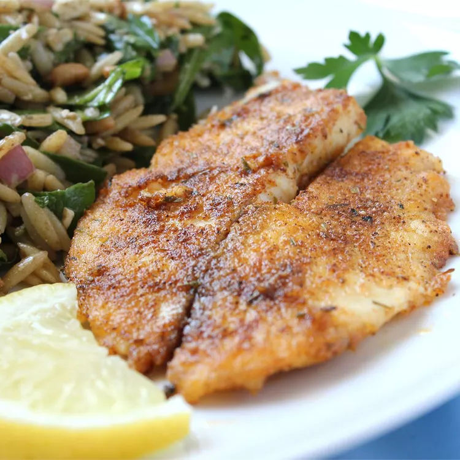

Seared Tilapia Recipe
Description
If you're looking for an easy weeknight dinner that comes together quickly, we've got you covered with this top-rated tilapia recipe. This pan-seared tilapia couldn't be simpler to make in just 15 minutes.
Ingredients
- 4 (4 ounce) tilapia fillets
- Salt and ground black pepper to taste
- 1/2 cup all-purpose flour
- 1 tablespoon olive oil
- 2 tablespoons unsalted butter, melted
- 1 tablespoon lemon juice, or to taste (Optional)
- 1 teaspoon chopped fresh flat-leaf parsley, or to taste (Optional)
- 1/2 teaspoon chopped fresh thyme, or to taste (Optional)
Steps
- Rinse tilapia fillets in cold water and pat dry with paper towels. Season both sides of each fillet with salt and pepper.
- Place flour in a shallow dish. Gently press each fillet into the flour to coat and shake off any excess.
- Heat olive oil in a large skillet over medium-high heat. Cook tilapia fillets in the hot oil, in batches if necessary, until fish flakes easily with a fork, about 4 minutes per side.
- Brush melted butter onto the tilapia fillets in the last minute before removing from the skillet.
- Drizzle fillets with lemon juice and garnish with parsley and thyme.